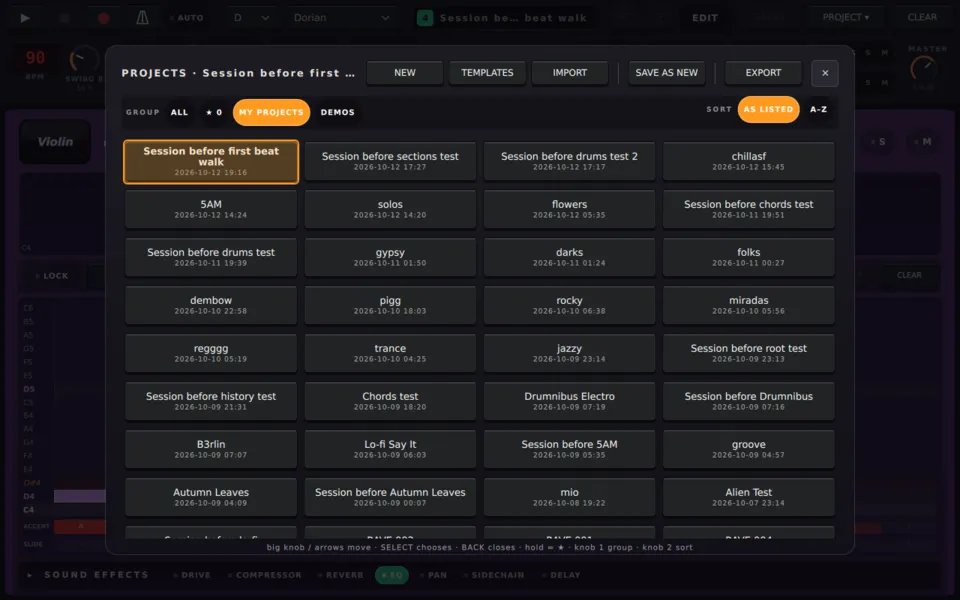
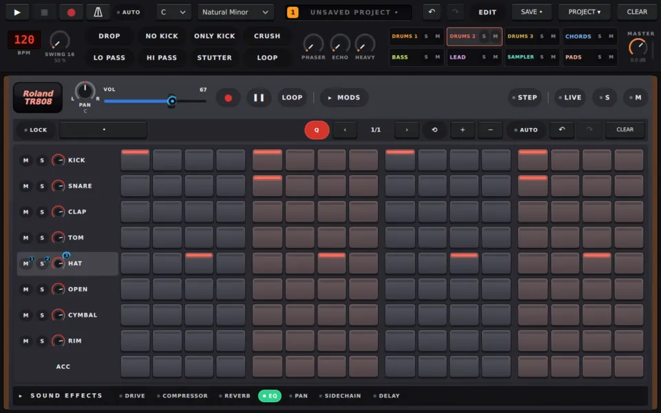
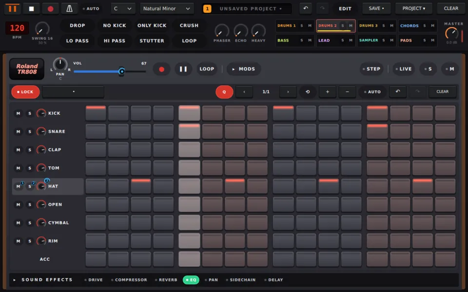
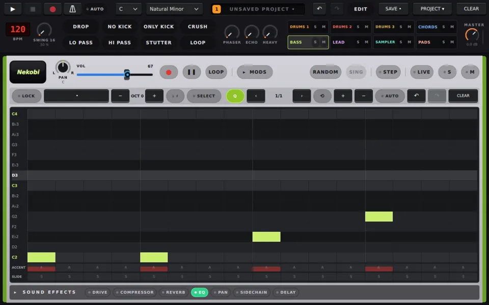
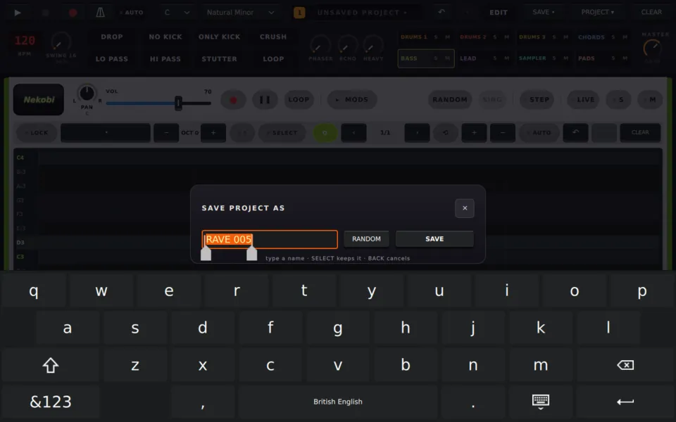

Using ravving / guide/first-beat.md
Your first beat
From silence to a saved project in a few minutes: drums, a bass line, play and save.
From silence to a saved project in a few minutes. You'll write a drum beat, add a bass line, play it and save it.
1. Start a fresh project
Open PROJECT ▾ in the header and tap NEW. Every page starts empty, with one section, "A".

2. Write a kick drum
- Press 1 to open the drums.
- The KICK row is picked already. ▲ ▼ move between the rows.
- Press step keys 1, 5, 9 and 13. Each key lights a step on the KICK row.
That's a kick on every beat, also called four on the floor.
3. Add a snare and hi-hats
- Press ▼ to move to the SNARE row.
- Press step keys 5 and 13: the snare lands on beats two and four.
- Press ▼ three more times, to the HAT row, and press 3, 7, 11 and 15 for off-beat hi-hats.

4. Hear it
Press PLAY. The step keys light up as the playhead moves along the bar.
While it plays, the note grids are locked so a stray tap can't change your beat. To edit while it plays, tap LOCK in the pattern toolbar.

Press STOP when you're ready to move on.
5. Add a bass line
- Press 3 to open the bass.
- Tap a few cells on the piano roll. Each tap writes a note there; tap it again to remove it.
- Press PLAY to hear the bass with your drums.

Every melodic machine follows the project's key and scale, which you set at the left of the header.
6. Turn it up or down
- The big knob sets the volume of the machine on screen.
- ALT + the big knob sets the master volume, from anywhere.
7. Save it
Tap SAVE in the header. The first time, ravving asks for a name and the on-screen keyboard comes up. It suggests a name, and RANDOM picks another; type your own or keep it.

After that, SAVE writes over the project. It asks AGAIN? first, so press it twice within three seconds.
Your project is now in PROJECT ▾, ready to open next time.
Where to go next
- Sections and the song: turn your loop into a song.
- Playing and editing: play live, move notes, shape single notes.
- Sound sources: give the bass and lead another sound, and load pattern presets.